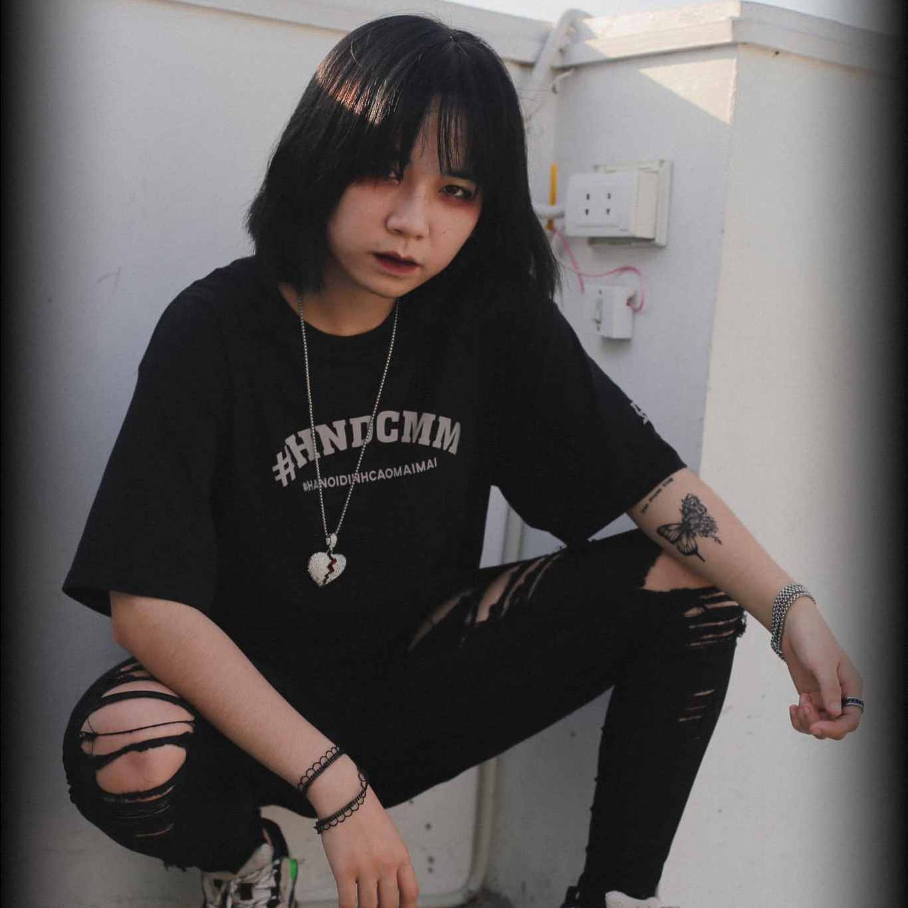

TRAN HUYEN DIEP
Trần Huyền Diệp là rapper nữ mà mình yêu thích nhất trong các rapper nữ của Việt Nam. Cô nàng có style ngầu, cá tính, nhưng lại rất dễ thương.
Bài mà mình thích nhất thì là bài 'Ready?' mà cô nàng đáp trả lại RED D. Beat của bài này gợi đến một buổi tối ở nơi hoang vu, hẻo lánh với tiếng gió hú, tiếng đàn dơi kêu, tiếng côn trùng râm ran. Khung cảnh này gợi trí tò mò của người nghe, đi vào thế giới huyền bí của Trần Huyền Diệp.
Về giọng rap, cô nàng có thể rap theo kiểu gắt gỏng, mạnh mẽ nhưng cũng có thể rap theo kiểu nhẹ nhàng, an ủi. Flow của cô nàng khá dài và mượt mà, không bị đứt quãng. Cách tạo vần, lyric cũng ổn, có sự hài hước, gây ấn tượng và ngạc nhiên cho người nghe.
Về nội dung, Trần Huyền Diệp thường rap về những cô gái bad girl phóng khoáng. Nhưng cô nàng vẫn có sự thanh lịch và tinh tế của một cô gái hiện đại. Ví dụ như ở bài "Ready?", cô nàng thể hiện sự bực tức vì bị thằng chó bú fame đào scandal của mình, nhưng đồng thời cũng thể hiện sự cảm thông và an ủi với thằng chó đó. Điều này khiến mình vô cùng yêu thích Trần Huyền Diệp.
Nói tóm lại, Trần Huyền Diệp là một rapper nữ thông minh, cá tính, sáng tạo, và có nhiều năng lượng tích cực. Tin rằng trong tương lai, cô nàng sẽ có nhiều bài hay hơn nữa.